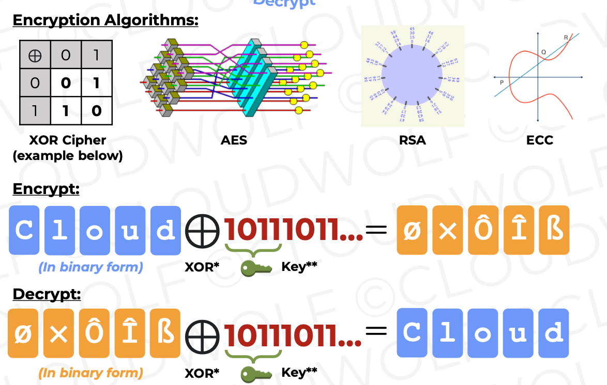
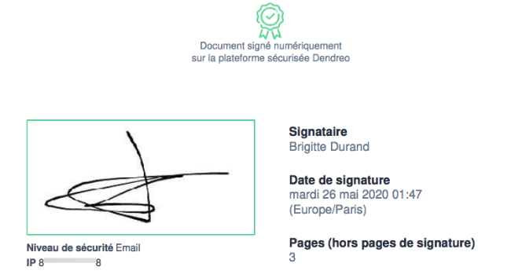
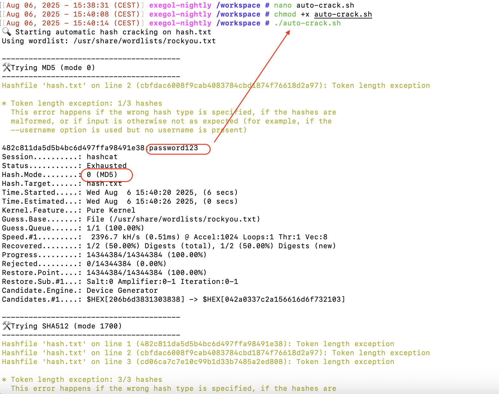
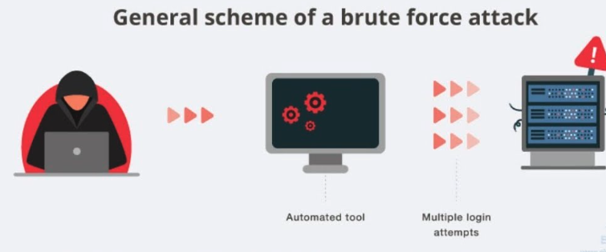
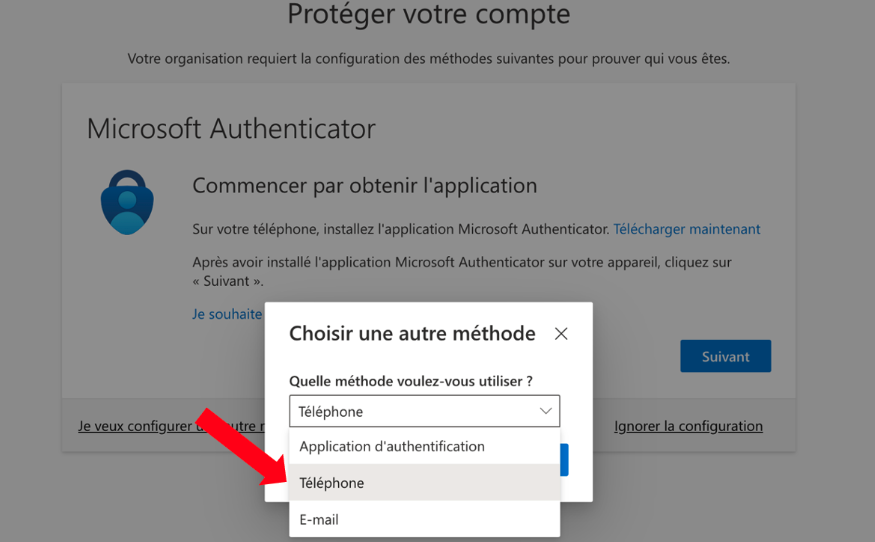
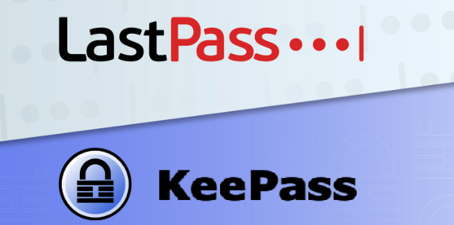

[Concepts de Cybersécurité] 001 – Introduction au Hash : principe, applications, méthodes d’attaque et stratégies de défense
06 Août 2025, 15:24 CEST
CyberBases du hachage pour débutants en sécurité informatique
Cet article a pour objectif de vous expliquer, de manière simple et accessible, la notion de hash (hachage), son rôle dans les applications quotidiennes, les techniques d’attaque utilisées par les hackers, les outils couramment employés, ainsi que les moyens efficaces pour s’en protéger. Il s’adresse particulièrement aux débutants en sécurité informatique ou en mécanismes de chiffrement.

1. Qu’est-ce qu’un Hash (hachage) ?
Le hachage (en anglais hash ou hash function) est une fonction mathématique qui convertit une donnée de longueur arbitraire en une valeur de longueur fixe, appelée valeur de hachage.
Caractéristiques principales :
- Sortie de longueur fixe : Peu importe si l’entrée fait 1 octet ou plusieurs centaines de mégaoctets, la fonction de hachage produit une sortie de taille fixe. Par exemple, SHA-256 produit toujours une sortie de 256 bits (soit 64 caractères hexadécimaux).
- Effet avalanche : Une modification minime dans l’entrée (par exemple, changer un “A” majuscule en “a”) entraîne un changement drastique dans le résultat, ce qui rend impossible de déduire l’entrée d’origine à partir de la sortie.
- Vérification d’intégrité : Si l’on applique la même fonction de hachage à une même donnée, on obtient toujours la même valeur de hachage. Cela permet de vérifier si une donnée a été modifiée pendant son stockage ou son transfert.
Pourquoi la valeur de hachage permet-elle de vérifier l’intégrité ?
A calcule la valeur de hachage du mot « APPLE » avec SHA-1 et obtient : d0be2dc421be4fcd0172e5afceea3970e2f3d940
A transmet ce hash à B, en plus du texte « APPLE ».
B calcule lui-même le hash avec SHA-1 et compare :
- Si les deux valeurs sont identiques, le message n’a pas été modifié.
- Si un seul caractère a changé, le hash sera complètement différent et B détectera la modification.

2. Quand utilise-t-on le Hash ?
Vérification de l’intégrité des fichiers
Par exemple, lors du téléchargement d’une image ISO d’un système d’exploitation, le site officiel fournit la valeur de hachage (MD5, SHA-256, etc.). L’utilisateur peut comparer le hash pour s’assurer que le fichier n’a pas été altéré.
Stockage sécurisé des mots de passe
Les sites ne conservent pas les mots de passe en clair, mais leur valeur hachée (avec ajout d’un salt). Ainsi, même si un pirate accède à la base, il sera difficile de retrouver les mots de passe d’origine.
Signatures et certificats numériques
Pour envoyer un document important, on calcule son hash puis on le chiffre avec une clé privée. Le destinataire déchiffre avec la clé publique et compare avec son propre calcul. Si les deux valeurs correspondent, le document est intact et authentique.
Combinaison hachage + chiffrement asymétrique
L’utilisation de clés publiques/privées pour signer la valeur de hachage garantit à la fois l’intégrité des données et l’authenticité de l’expéditeur.

3. Comment les hackers attaquent-ils les Hash ?
Attaque par dictionnaire (Dictionary Attack)
Utilisation de listes de mots de passe courants ou fuités (123456, password, etc.), testés les uns après les autres.
Brute Force (attaque exhaustive)
Essai systématique de toutes les combinaisons possibles jusqu’à trouver la bonne.
Rainbow Table Attack (attaque par tables arc-en-ciel)
Utilisation de tables pré-calculées associant chaînes → valeurs de hachage pour accélérer la recherche.
Collision Attack (attaque par collision)
Trouver deux entrées différentes produisant le même hash. Si l’algorithme est faible, cela permet des modifications invisibles dans les documents.

4. Outils d’attaque courants
Hashcat
Outil puissant de cassage de hash, compatible CPU/GPU, capable d’attaques par dictionnaire, brute force et rainbow tables.
John the Ripper
Outil ancien mais encore populaire, supportant plusieurs systèmes et algorithmes.
RainbowCrack
Spécialisé dans les attaques par tables arc-en-ciel.
Sites de recherche en ligne
Certains sites disposent de bases massives de hash, permettant de retrouver le texte clair correspondant.

5. Comment se protéger efficacement ?
Utiliser Salt et des algorithmes sécurisés pour les mots de passe
Ajouter un salt (chaîne aléatoire) avant le hachage pour éviter les attaques par tables pré-calculées.
Utiliser des algorithmes robustes : bcrypt, scrypt, PBKDF2, Argon2, qui ralentissent volontairement le calcul pour compliquer les attaques.
Mettre à jour régulièrement les algorithmes et systèmes
Éviter les algorithmes vulnérables (MD5, SHA-1).
Préférer SHA-256, SHA-3 ou des algorithmes dédiés aux mots de passe.
Limiter les tentatives de connexion + activer la MFA
Restreindre le nombre d’essais pour réduire le risque de brute force.
Activer l’authentification multi-facteurs (MFA) pour une protection supplémentaire.
Utiliser des signatures avec clés publiques/privées et le hachage
Pour garantir l’identité et l’intégrité dans les échanges.
Sécuriser la transmission (SSL/TLS)
Même si le hash protège l’intégrité, les données en clair peuvent être interceptées. Un chiffrement réseau est indispensable.

En résumé
Le hachage sert à vérifier l’intégrité des données et authentifier les identités.
Il est utilisé dans la vérification d’intégrité, le stockage des mots de passe, les signatures numériques, etc.
Les hackers utilisent des attaques par dictionnaire, brute force, rainbow tables, ou exploitent les collisions.
Les outils les plus connus : Hashcat, John the Ripper, RainbowCrack.
Pour se protéger : KeePass, LastPass, salt, algorithmes robustes, limitation des tentatives, MFA, signatures cryptographiques, et chiffrement des communications.